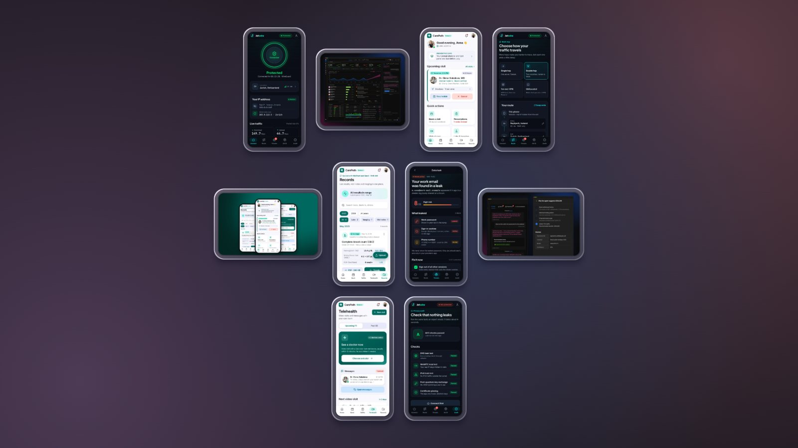
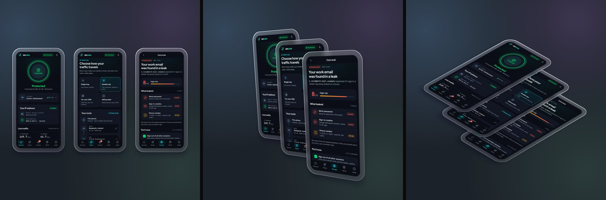
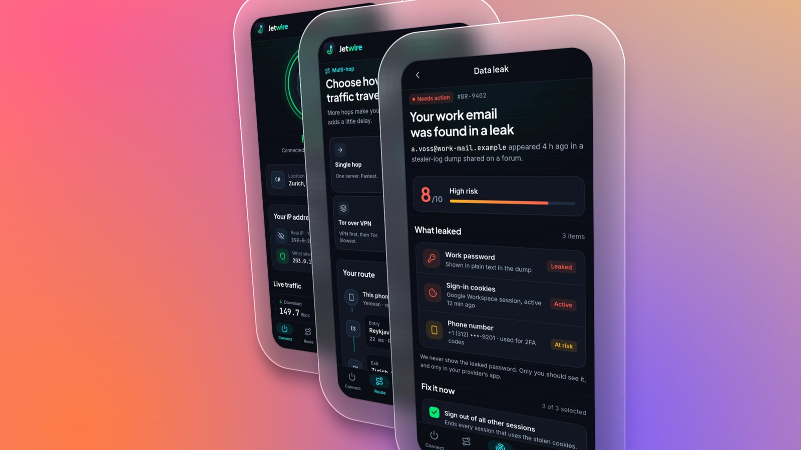
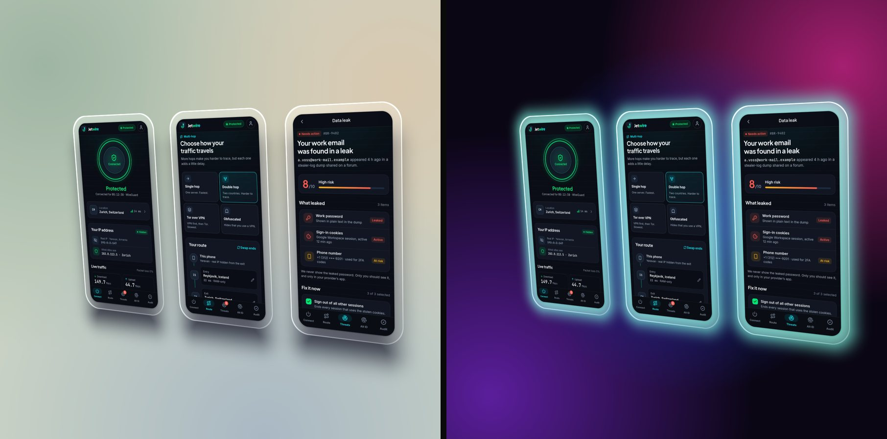
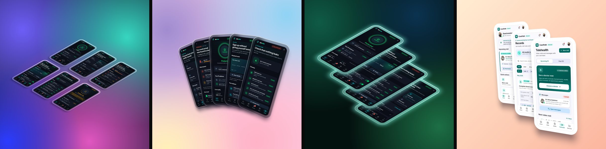
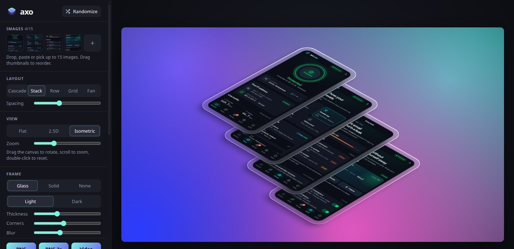
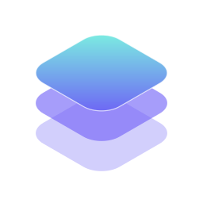

Every case study needs a cover image, and I was building each one by hand. So I made a browser tool that turns up to 15 screenshots into a glass-framed 2.5D or isometric scene and saves it as an image or a short video. You can use it below, free: no watermark, no paywall and no sign-up.
Try the toolIt opens with three demo screens. Drop in your own images, pick a layout and a view, or press Randomize. Nothing is uploaded: your images stay in your browser. Every image on this page was made with it. It has the most room in its own tab.
Open in new tabThis is an old idea of mine: a tool that makes design work look good in a presentation. Now it's live, and anyone can use it. I wrote the brief, decided what the tool should and shouldn't do, and tested every version. Claude Code wrote the rendering code.
My part was scope and judgement: which controls earn a place, and what breaks in real use.
Working graphics code in hours: the glass blur, the camera and the video encoder.
What to build, what to leave out, and what broke in real use.
Role
Product concept, scope, interface decisions and testing
Tools
Claude Code (AI), WebGL, WebCodecs
Type
Browser tool for designers
No watermark
Images and videos export clean, at full size.
No paywall
Every feature is free. There is no paid tier.
No sign-up
Open the page and start. No account, no email.
Most mockup tools are built around one screenshot in one device frame. A case study needs several screens in one shot, and they're rarely the same shape. I liked Screenstab, a free tool that tilts a single screenshot, and wanted the same ease for a whole set.
Drop in a set of screens and get a finished cover in about a minute. No device frames to match, no account and no upload.
The tool opens on a scene that already looks good, built from demo screens. Your first upload replaces them, so you start from a result, not an empty canvas.
Images are processed on your own computer and never uploaded. That matters when the work is under NDA, and it means there's no account to create.
The first version recorded the screen live, and a slow computer saved a three-second clip with five frames in it. Now every frame is drawn and encoded one at a time, however long that takes.
Firefox can't make MP4 video, so the tool saves WebM there instead of failing. Recording has a Stop button, and if an export fails the message names the reason.

There's no device to match. Each image gets a frame in its own shape, so a phone screen and a desktop dashboard sit together.

Drag the canvas to find your own angle, and scroll to zoom.

Each frame blurs whatever sits behind it, including the other cards, the way frosted glass would. You set its thickness, corners and blur, or switch to a solid frame or none.

Elevation moves the shadow away from the card and softens it, and spread grows or shrinks it. On dark backgrounds, switch to a glow in any colour.

Randomize picks a new view, layout, frame and background while keeping your images. In a video, the Shuffle motion does the same thing on a timer.

Save a PNG up to 3840 px wide, or a video of 3 to 10 seconds in five canvas shapes, from 16:9 to 9:16.

Axo is short for axonometric, the family of projections that isometric belongs to. The logo is the product in miniature: three screens, stacked, seen at an angle. It stays readable at 16 px.